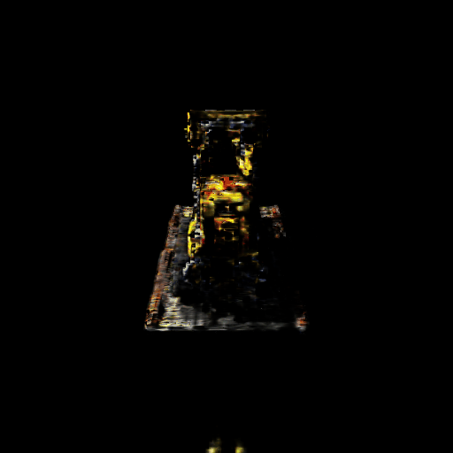
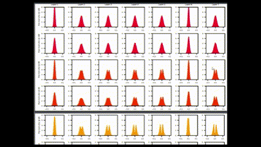
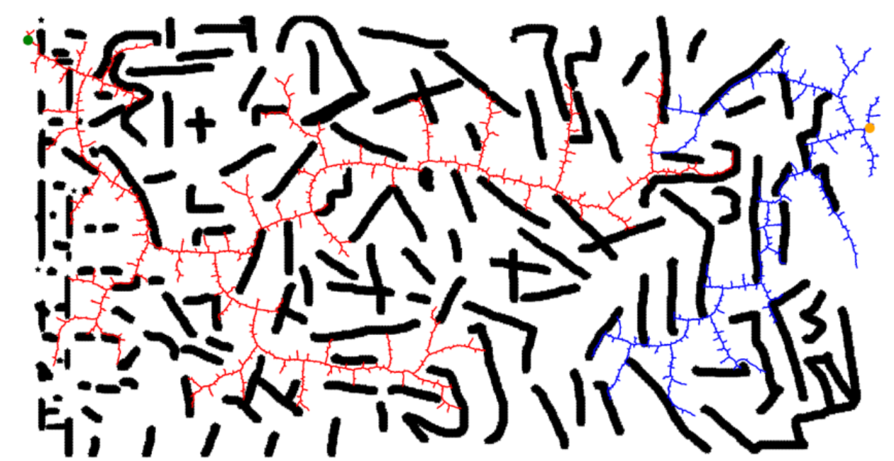
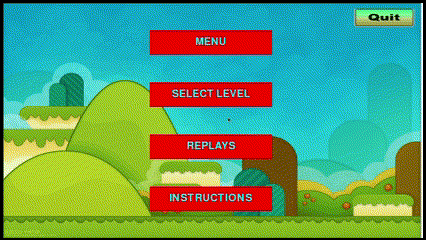

|
Aman Mehra I'm a second year MS Robotics student at Carnegie Mellon University where I am advised by Prof. Jeff Schneider. I have also collaborated with Prof. Aditi Raghunathan and Prof. Zico Kolter. I am broadly interested in topics spanning generalization, reinforcement learning and perception. Previously, I spent a wonderful year as a research fellow at Microsoft Research where I worked with Saikat Guha on image generation and perspective geometry. I did my undergrad from IIIT Delhi and graduated in 2021 with a major in CS. During this time I worked with Prof. Mayank Vatsa, Prof. Richa Singh and Prof. Sanjit Kaul CV / Google Scholar / Github |

|
Research |

|
Predicting the Performance of Foundation Models via Agreement-on-the-line
Aman Mehra*, Rahul Saxena*, Taeyoun Kim*, Christina Baek, J Zico Kolter, Aditi Raghunathan NeurIPS R0-FoMo Workshop , 2023 NeurIPS DistShift Workshop , 2023 PDF / Poster Understanding when can accuracy of finetuned foundation models be reliably estimated out-of-distribution with the phenomemon of Agreement-on-the-Line. |

|
Motion Magnified 3D Residual-in-Dense Network for Deepfake Detection
Aman Mehra, Akshay Agarwal, Mayank Vatsa, Richa Singh IEEE Transactions on Biometrics, Behavior, and Identity Science , 2022 Link / PDF / Bibtex Amplifying temporal inconsistencies to detect deepfake videos with confounding JPEG compression artifacts. |

|
Detection of Digital Manipulation in Facial Images (Student Abstract)
Aman Mehra, Akshay Agarwal, Mayank Vatsa, Richa Singh AAAI (Student Abstract) , 2021 Link / Bibtex Detecting deepfake videos through 3D CNNs. |
Projects |
|

|
Sparse Voxel Grids for Accelerated Inverse Rendering
Aman Mehra Report, 2023 Accelerated inverse rendering from posed multi-view images via sparse voxel grids. |
|

|
Lottery Tickets through the lens of Random Matrix Theory
Aman Mehra Report, 2021 A study to probe whether analysis from random matrix theory can characterize winning lotteries in deep networks. |
|
|
Refresh Stale Transitions in Replay Buffer
Aman Mehra Report, 2021 PDF/ Code Improving sample efficiency in off-policy RL by refreshing stale transitions in replay buffer. |
|

|
CUDA accelerated RRT
Aman Mehra, Paras Sharma, Savit Gupta Report, 2021 PDF / Code An implementation of the RRT algorithm accelerated using Quad Trees and CUDA |
Game Recreations |
|

|
Angry Birds
Aman Mehra 2017 Code |

|
Flappy Bird
Aman Mehra 2016 Code |
Miscellaneous |
Reviewer, NeurIPS Workshop 2023
Reviewer, ICCV Workshop 2023 |